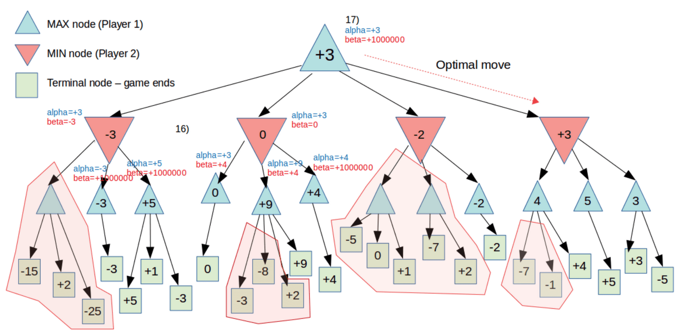

3 Game Playing
We will take about 2 player adversarial games
Like a search, you need to define configurations/states of being so the agent knows how to move and reach some goal state.
Example Tic Tac Toe¶
- Goal state: three of a X/O in a row
- Actions
- 9 possible edges to travel to initially, as you can play in any of the actions
- 8 moves subsequently
- This will however assume that the opponent will move exactly as we predict
To do this properly, we will probably need to define some heuristic. But it would be almost impossible to win because we'd have to rerun the search if the opponent plays something unexpected.
Possible strategy¶
Run djikstra's and pick the option that gives you the most paths to the goal state.
MiniMax Search¶
Uses BFS!
Utility Function: It will score all configurations, where it will assign +1 if it results in a P1 win, and -1 if it results in a loss for P1, 0 if draw.
P1 wants to maximize the utility function P2 wants to minimize the utility function
For Tic Tac Toe¶
P1 gets the first move, and will try to maximize the utility function P2 on the second move, will try to minimize that same utility function At a goal state, depending on which player has the move to get to the goal state, we can backtrack and fill out all the utility values for each configurations. If the goal state is a loss, and P2 has the move that can get there, then that node at P2 has a utility of -1.
Complexity¶
\(O(b^{m})\) Where \(m =\) number of moves \(b=\) branching factor
Ex. in chess, the branching factor is 25 and there are approx 100 moves
Method¶
Starting at the current configuration, perform minimax for at most k levels of the search tree (where k depends on how much time we have to move)
At level K, we use the utility function to score the node (will be a score for an incomplete game, so the utility function will be crunchy)
To make this more efficient, we can perform tree pruning, specifically:
\(\alpha, \beta\) pruning¶
Each node in the tree is going to be associated with \(\alpha,\beta\) values that are large numbers. (Ex \(\alpha=-\infty, \beta=+\infty\)) The current node will inherit these values from it's parent, and need to perform minimax on it's children nodes in order to update these values.
\(\alpha, \beta\) keeps track of the best current choice for current node and the parents node
- The max nodes update their \(\alpha\) value and prune based on the \(\beta\) value.
- The min nodes update \(\beta\) value and prune based on \(\alpha\).
- Eg. The \(\beta\) value tracks the best current choice, and will report it back up the tree. On the parents node, it will set \(\alpha\) to that value.
Example¶
When you go to another child (min) node, you will pass in the \(\alpha, \beta\) values from the parent (max) and if that child(min) sets their \(\beta\) at some value that is smaller than \(\alpha\), then it can immediately stop (as the min node will not give any value \(\beta\) greater than that minimum)

Monte Carlo Tree Search¶
Not really talked about, just a brief description of it and how it isn't great
Runs simulations at each move and uses the result to create some utility function
ExpectiMiniMax - Games with Chance¶
Where there is a random chance event after each move (picking a card, rolling a die) and that influences the next state/final states.
In the tree search, it is represented with a diamond shaped node called a chance node which leads to child nodes with certain probabilities.
What we do is calculate the expected utility at each move for each player, using the simple weighted average technique.
We can still do \(\alpha, \beta\) pruning! Heres how:
Alpha Beta Pruning¶
You cannot compute the average utility if you don't compute the average utility of every child node of the chance nodes, because you cannot take the average with missing values.
In practice the utility function is always bounded.
The overhead of computing with \(\alpha, \beta\) is just proportional to \(N\), which is still less compute than \(b^{k}\) or \(b^{m}\).